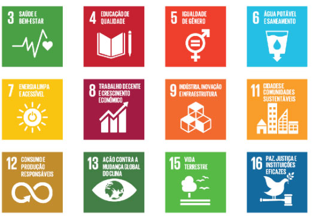

Meio ambiente
Uma empresa é ambientalmente responsável quando vai além da obrigação de respeitar as leis, contribuindo para a construção de uma sociedade mais justa e de um modelo responsável de uso de recursos naturais.
Conheça alguns deles:
- Eficiência energética – Programas e iniciativas que priorizam a utilização de etanol e de energia fotovoltaica por meio da instalação de usinas solares em algumas concessões – um modelo que elevará a autonomia e a adoção de fontes renováveis e limpas pelo Grupo.
Também desenvolvem treinamentos de direção consciente com informações para reduzir o consumo de combustíveis. - Reutilização de materiais - O uso de asfalto borracha e de material fresado traz eficiência às operações e colabora com o meio ambiente.
Produzido a partir da reutilização de pneus sem condições de uso e que seriam descartados no meio ambiente, o asfalto borracha é uma solução ambientalmente correta e que melhora sensivelmente a qualidade do pavimento nas estradas administradas pela EcoRodovias.
O material fresado excedente dos serviços de pavimentação e obras de engenharia, por sua vez, é reaproveitado para recuperação das rodovias sob concessão ou doado às Prefeituras regionais para obras em estradas vicinais.
Biodiversidade
Na análise da viabilidade de novos negócios, são realizados estudos ambientais específicos para diminuir impactos na fauna e na flora.
Nas rodovias em operação, são realizados monitoramentos por trecho e ações de conscientização para preservação da fauna silvestre e doméstica.
São realizadas ainda ações de controle para flora, tais como monitoramento de áreas queimadas ou áreas potenciais, ações de conscientização nas comunidades que margeiam as rodovias concessionadas e plantios compensatórios.
Mudanças climáticas
Signatária do Pacto Global e com uma gestão ESG orientada pelos Objetivos de Desenvolvimento Sustentável (ODS) da Organização das Nações Unidas (ONU), a EcoRodovias adota políticas internas preventivas contra a mudança global do clima, sendo a Política de Diretrizes de Sustentabilidade o principal documento que norteia as ações da Companhia neste âmbito. Nessa política são estabelecidos compromissos e a forma de gestão da sustentabilidade, e mais especificamente das mudanças climáticas.
A estratégia da Companhia é baseada em três pilares: adaptação, mitigação e compensação das emissões de Gases de Efeito Estufa (GEE). A EcoRodovias mantém compromissos e metas relacionados a questões climáticas:
Meta climática atrelada à remuneração variável para os todos os colaboradores:
- - redução nas emissões totais de GEE.
Meta climática atrelada à remuneração variável da liderança:
- - planejamento e alternativas para descarbonização de processos.
Desde 2013, a Companhia realiza a compensação de 100% de suas emissões de escopo 1 , 2 e 3, calculadas por meio da participação no Amigo do Clima. Esse programa ambiental voluntário apoia empresas, organizações, eventos e pessoas a compensarem suas emissões de Gases de Efeito Estufa.
Em 2021, a principal conquista da gestão ambiental da EcoRodovias foi a inclusão de suas ações no Índice Carbono Eficiente (ICO2 B3), que reconhece as empresas transparentes com relação a suas emissões de gases de efeito estufa.
Desenvolvimento humano e social
A EcoRodovias busca apoiar o desenvolvimento humano e social por meio de projetos que impactam seus colaboradores, bem como as comunidades ao redor das rodovias que a Companhia administra.
A realização dos projetos para comunidades acontece por meio de recursos orçamentários próprios ou proveniente das Leis de Incentivo à Cultura, Esportes, Idosos, Crianças, ISS (Lei de Incentivo à Cultura), Pronas (Acessibilidade) e Pronon (Oncologia).
Caso tenha interesse em inscrever um projeto, clique aqui, preencha o formulário e envie sua sugestão para a EcoRodovias.
Os temas prioritários dessas iniciativas são educação no trânsito, educação ambiental, diversidade e inclusão, capacitação profissional, incentivo à cultura, aos esportes e geração de renda. Incluem ainda saúde, enfrentamento à violência sexual de crianças e adolescentes e proteção aos animais.
Internamente, a EcoRodovias busca construir um ambiente saudável, onde todos se sintam seguros para se desenvolver pessoal e profissionalmente. A empresa investe em uma cultura que valoriza o respeito à diversidade e fomenta a inclusão. Para isso, conta com comitês específicos, grupos de afinidades e mentorias (veja mais clicando aqui).
Cultura, Pessoas e Diversidade
Na EcoRodovias, a diversidade e a inclusão estão diretamente ligados aos nossos valores, respeitando todas as formas de agir, de pensar e de ser. Trabalhamos com o propósito de eliminar as barreiras, buscando times diversos, em que cada um pode ser a sua melhor versão.
Dentro da EcoRodovias trabalhamos em três grandes Frentes que atuam em cinco pilares centrais, sendo eles: Mulheres, LGBTQIAPN+, Raça, Pessoas com Deficiência e Convívio de Gerações.
Frentes de Trabalho:
1.Estrutura e Processos
Nesta frente olhamos as melhorias que podemos realizar nos processos internos para serem mais inclusivos, como: recrutamento, seleção, integração, sistemas, cadastros, etc. Elaboramos materiais com informações, estatísticas, pesquisas e normas para serem consultivos e apoiarem as tomadas de decisão. Assim como avaliar as estruturas para eliminar as barreiras físicas e tecnológicas para entrada e promoção de profissionais diversos.
Exemplos:
- Painel de indicadores de Diversidade e Inclusão;
- Censo de Diversidade e Inclusão;
- Guia de D&I EcoRodovias;
- IN de D&I;
- Currículos Cegos;
- Nome social;
- Adequação dos processos, estruturas para acessibilidade e sistemas para diversidade;
- Revisão e adequação do processo seletivo e integração;
2. Treinamento e Informação
Nesta frente, atuamos com a conscientização, instrução e capacitação no tema para todos os colaboradores. Ocorrem a elaboração e desdobramentos de temas específicos de acordo com a necessidade identificada, como treinamentos específicos para líderes, para recrutadores, para líderes de grupos de afinidade etc.
Exemplos:
- Treinamento de D&I e vieses inconscientes;
- Comunicados inclusivos;
- Palestras presenciais e virtuais;
- Capacitações e treinamentos via e-learning específicos sobre diversidade;
- Informação e instrução através da EcoNews (newsletter interna mensal).
3. Ações Afirmativas
São atividades elaboradas para impulsionar, instruir e discutir sobre D&I na empresa. Através destas ações afirmamos nossos compromissos pelo respeito e inclusão, damos espaço para troca de experiências e contribuímos para o aprendizado contínuo sobre o tema.
Exemplos:
- Mês da diversidade;
- Rodas de Conversas;
- Palestras em datas comemorativas;
- Grupos de Afinidade (Raça, LGBTQIAPN+, Mulheres e PcDs);
- Mentoria para homens e para mulheres;
- Parcerias com consultorias especializadas.
Caminho Para Todos
Em 2018, foi criado o programa Caminho para Todos com o objetivo de promover ações para conscientização no tema e promoção de relações com respeito e inclusão, assim como eliminar as barreiras na contração e promoção de grupos minorizados como estratégia de trabalho.
O Programa Caminho Para Todos abriga comitês de diversidade e grupos de afinidade, mantendo assim toda uma estratégia multidisciplinar com uma gestão integrada.
Sobre o comitê de diversidade, podemos dizer que tem o objetivo de propor e/ou deliberar iniciativas, ações e diretrizes relativas ao tema, que contribuam para a disseminação da cultura voltada para diversidade e inclusão, alinhados aos nossos valores.
Os grupos de afinidade criam e fazem manutenção de um espaço para que as pessoas possam compartilhar as suas vivências, dentro da empresa como também fora dela. Na jornada de seus integrantes está contribuir com ideias e ações dentro de seus pilares, identificar eventuais barreiras ou obstáculos e propor ações, apoiando nas realizações e comunicações sobre o tema dentro da empresa.
Investimento Social
A Política de Investimento Social da EcoRodovias considera as Diretrizes de Sustentabilidade da Companhia e foi baseada nas exigências dos principais indicadores, princípios e critérios nacionais e internacionais de avaliação de uma gestão empresarial responsável.
A implantação dos projetos pode acontecer por meio de parcerias com órgãos governamentais, fundações, empresas, ONGs (Organizações Não Governamentais), Oscips (Organizações da Sociedade Civil de Interesse Público), OSCs (Organizações da Sociedade Civil) ou de iniciativas próprias, com a participação ou não de outras entidades. Qualquer área, colaborador ou terceiros representados por colaboradores podem criar ou sugerir projetos por meio do formulário de cadastramento de propostas e/ou ideias. É só clicar aqui.
Os projetos são avaliados pela área de sustentabilidade. A escolha leva em conta alguns parâmetros importantes de responsabilidade social:
- Estar alinhado a algum dos 17 Objetivos de Desenvolvimento Sustentável da ONU;
- Respeitar e valorizar a diversidade dos indivíduos, como condição social, orientação religiosa, nacionalidade, cor, gênero, orientação sexual;
- Contribuir para objetivos de políticas públicas que têm como meta a melhoria dos indicadores sociais das regiões atendidas e criar perspectivas para aumentar as ações de voluntariado dos colaboradores do Grupo.
O portfólio de programas de investimento social da Companhia atualmente é composto por iniciativas incentivadas ou próprias. São elas:
Projetos socioambientais incentivados Projetos socioambientais própriosPARCERIAS ESTRATÉGICAS
Pacto Global das Nações Unidas
A EcoRodovias se tornou signatária do Pacto Global, iniciativa da ONU, em 2014, com o objetivo de potencializar suas práticas empresariais em sustentabilidade, alinhando operações e estratégias aos 10 Princípios Universais previstos pelo acordo.
Em 2020, a EcoRodovias intensificou o engajamento na iniciativa e, de signatária, passou a participante do Pacto Global, o que significa o envolvimento contínuo de colaboradores e lideranças na disseminação das diretrizes do Pacto.
Sobre o Pacto Global
Desenvolvida pelo ex-secretário-geral da ONU, Kofi Annan, com o objetivo de mobilizar a comunidade empresarial internacional, essa iniciativa conta com a participação de agências das Nações Unidas, empresas, sindicatos, organizações não governamentais e demais parceiros que, unidos, visam à construção de um mercado global mais inclusivo e igualitário. Atualmente, são mais de 5.200 organizações signatárias, articuladas por 150 redes ao redor do mundo.
Os 10 Princípios Universais do Pacto Global – divididos em quatro pilares:
Direitos humanos
1 – As empresas devem apoiar e respeitar a proteção de direitos humanos reconhecidos internacionalmente.
2 – Assegurar-se de sua não participação em violações desses direitos.
Trabalho
3 – As empresas devem apoiar a liberdade de associação e o reconhecimento efetivo do direito à negociação coletiva.
4 – A eliminação de todas as formas de trabalho forçado ou compulsório.
5 – A abolição efetiva do trabalho infantil.
6 – Eliminar a discriminação no emprego.
Meio ambiente
7 – As empresas devem apoiar uma abordagem preventiva aos desafios ambientais.
8 – Desenvolver iniciativas para promover maior responsabilidade ambiental.
9 – Incentivar o desenvolvimento e difusão de tecnologias ambientalmente amigáveis.
Anticorrupção
10 – As empresas devem combater a corrupção em todas as suas formas, inclusive extorsão e propina.
Objetivos de Desenvolvimento Sustentável (ODS)
Estabelecidos pela Organização das Nações Unidas, os 17 Objetivos de Desenvolvimento Sustentável (ODS) são uma série de diretrizes com o objetivo de acabar com a pobreza e proteger pessoas em situação de vulnerabilidade e o meio ambiente (águas, territórios, fauna, flora e clima).
O alinhamento de empresas e governos a essas diretrizes é imprescindível para que possamos atingir as metas estabelecidas pela Agenda 2030, em todo o mundo.
A Agenda 2030 é um plano de ação global que reúne os 17 ODS e mais 169 metas.
Saiba mais e conheça os ODS em detalhe clicando aqui.
Os ODS prioritários para a EcoRodovias:
 O mapeamento de temas de interesse para a EcoRodovias também detectou quais ODS podem ser considerados prioritários para a atuação da EcoRodovias. Confira:ODS 3 - Saúde e bem-estar
Resumo da diretriz: Assegurar uma vida saudável e promover o bem-estar para todos, em todas as idades.
Alinha-se aos temas:
Segurança viária – pilar Operação Segura e Saudável;
Satisfação do usuário – pilar Operação Segura e Saudável;
Riscos e impactos ambientais, projetos/obras – pilar Excelência e Eficiência;
Saúde e segurança de colaboradores e terceiros – pilar Operação Segura e Saudável.
ODS 4 – Educação de qualidade
Resumo da diretriz: Assegurar a educação inclusiva e equitativa de qualidade e promover oportunidades de aprendizagem ao longo da vida para todos.
Alinha-se ao tema:
Qualificação do capital humano – pilar Cultura e Desenvolvimento.
ODS 5 - Igualdade de gênero
Resumo da diretriz: Alcançar a igualdade de gênero e empoderar todas as mulheres e meninas.
Alinha-se ao tema:
Inovação – pilar Cultura e Desenvolvimento.
ODS 6 - Água potável e saneamento
Resumo da diretriz: Assegurar a disponibilidade e a gestão sustentável da água e saneamento para todos.
Alinha-se ao tema:
Riscos e impactos ambientais, projetos/obras – pilar Excelência e Eficiência.
ODS 7 – Energia limpa e acessível
Resumo da diretriz: Assegurar o acesso confiável, sustentável, moderno e a preço acessível à energia para todos.
Alinha-se ao tema:
Riscos e impactos ambientais, projetos/obras – pilar Excelência e Eficiência.
ODS 8 - Trabalho decente e crescimento econômico
Resumo da diretriz: Promover o crescimento econômico sustentado, inclusivo e sustentável, o emprego pleno e produtivo e o trabalho decente para todos.
Alinha-se aos temas:
Qualificação do capital humano – pilar Cultura e Desenvolvimento;
Desempenho econômico e financeiro – pilar Perenidade;
Saúde e segurança de colaboradores e terceiros – pilar Operação Segura e Saudável.
OD 9 - Indústria, Inovação e Infraestrutura
Resumo da diretriz: Construir infraestruturas resilientes, promover a industrialização inclusiva e sustentável e fomentar a inovação.
Alinha-se aos temas:
Excelência operacional – pilar Excelência e Eficiência;
Inovação – pilar Cultura e Desenvolvimento.
ODS 11 - Cidades e Comunidades Sustentáveis
Resumo da diretriz: Tornar as cidades e os assentamentos humanos inclusivos, seguros, resilientes e sustentáveis.
Alinha-se ao tema:
Segurança viária – pilar Operação Segura e Saudável
ODS 12 - Consumo e produção responsáveis
Resumo da diretriz: Assegurar padrões de produção e de consumo sustentáveis.
Alinha-se ao tema:
Riscos e impactos ambientais, projetos/obras – pilar Excelência e Eficiência.
ODS 13 - Ação contra a mudança global do clima
Resumo da diretriz: Tomar medidas urgentes para combater a mudança do clima e seus impactos.
Alinha-se ao tema:
Riscos e impactos ambientais, projetos/obras – pilar Excelência e Eficiência.
ODS 15 - Vida terrestre
Resumo da diretriz: Proteger, recuperar e promover o uso sustentável dos ecossistemas terrestres, gerir de forma sustentável as florestas, combater a desertificação, deter e reverter a degradação da terra e deter a perda.
Alinha-se ao tema:
Riscos e impactos ambientais, projetos/obras – pilar Excelência e Eficiência.
ODS 16 – Paz, justiça e instituições eficazes
Resumo da diretriz: Promover sociedades pacíficas e inclusivas para o desenvolvimento sustentável, proporcionar o acesso à justiça para todos e construir instituições eficazes, responsáveis e inclusivas em todos os níveis.
Alinha-se aos temas:
Ética, integridade e combate à corrupção – pilar Ética e Compliance;
Conformidade com leis e regulamentos – pilar Ética e Compliance.
Programa Na Mão Certa
A EcoRodovias participa do Programa Na Mão Certa, da ONG Childhood Brasil que congrega as empresas comprometidas com o Pacto Empresarial Contra a Exploração Sexual de Crianças e Adolescentes nas Rodovias Brasileiras.
A EcoRodovias tem dedicado seus canais internos e externos de comunicação para disseminar informações e orientar seus colaboradores, fornecedores e parceiros sobre como atuar como um agente de proteção de crianças e adolescentes na prevenção e no enfrentamento de possíveis ocorrências de exploração sexual.
SAIBA MAIS
A partir do compromisso do Grupo EcoRodovias com o Programa Na Mão Certa, a comunicação interna e externa sobre a causa tem sido aprimorada por meio de ações de sensibilização com lideranças, funcionários, fornecedores e comunidade, em que todos são incentivados e orientados para atuarem como agentes de proteção.
Formamos uma rede interna de pontos focais e multiplicadores, com representantes de todas as unidades de negócio, capacitados para atuarem na causa, com base no planejamento anual elaborado de forma colaborativa pelo time.
Esse trabalho é realizado com ações presenciais e divulgação nos canais de comunicação do Grupo:
Saiba como denunciar
Todos temos de pensar em meios de solucionar esse problema, e sempre que presenciarmos alguma atitude suspeita, devemos discar 100 e reportar. As ligações são anônimas e podem ser feitas de todo o Brasil, de qualquer telefone, fixo ou móvel.
Programa Livres e Iguais
A EcoRodovias aderiu ao programa Livre e Iguais da Organização das Nações Unidas, tornando-se a primeira empresa do setor de concessões de rodovias do Brasil a se engajar ao movimento. Esse é mais um passo em direção ao nosso compromisso de melhorar o ambiente de trabalho e torná-lo um lugar cada vez mais plural e igualitário.
O Pacto Livres e Iguais é uma campanha global da ONU para aumentar a conscientização sobre a violência e a discriminação homofóbica e transfóbica e promover maior respeito e pelos direitos das pessoas LGBTQIAPN+.
As empresas apoiadoras precisam se comprometer a seguir ou buscar alcançar os cinco padrões de conduta listados a seguir:
- Respeitar os direitos humanos dos colaboradores, clientes, e membros da comunidade LGBTQIAPN+;
- Atuar para eliminar a discriminação de colaboradores LGBTQIAPN+;
- Apoiar colaboradores LGBTQIAPN+ no ambiente de trabalho;
- Não discriminar clientes, colaboradores, usuários, fornecedores e distribuidores LGBTQIAPN+, além de insistir que seus parceiros de negócio também não descriminem;
- Defender os direitos de pessoas LGBTQIAPN+ nas comunidades onde realizam seus negócios.
Programa Amigo do Clima
O Amigo do Clima é um programa ambiental voluntário, cujo objetivo é apoiar empresas, organizações, eventos e pessoas a compensarem suas emissões de Gases de Efeito Estufa.
Desde 2013 a Companhia compensou 168.488 tCO2, o que representa 100% de suas emissões de escopo 1, 2 e 3 através da compra de créditos de carbono no âmbito do Mecanismo de Desenvolvimento e Limpo, e mais recentemente também a partir de créditos de REDD (Redução de Emissões por Desmatamento e Degradação).
CEBDS
A agenda ESG está cada vez mais forte dentro da EcoRodovias, e para fortalecer ainda mais esse tema, a Companhia se associou ao Conselho Empresarial Brasileiro para o Desenvolvimento Sustentável (CEBDS). O CEBDS é uma associação civil sem fins lucrativos, que reúne diversas empresas para a promoção do desenvolvimento sustentável no país, através da articulação junto aos governos e sociedade civil. Ao se associar a essa iniciativa, a EcoRodovias tem a possibilidade de participar das principais discussões sobre o tema no Brasil, contribuindo para a formulação de políticas e engajamento da sociedade. A Companhia participa de quatro câmaras temáticas (CT) que trabalham diferentes temas de relevância para a sociedade: CT Água, CT Biodiversidade, CT Clima e CT Social.
Certificações e reconhecimentos
Ao longo dos anos, a EcoRodovias recebeu diversas certificações e reconhecimentos importantes, reafirmando seu compromisso com a sustentabilidade em suas operações, bem como seu alinhamento com os critérios ESG.
EcoRodovias
Ecopistas
Ecovia Caminho do Mar (concessão concluída em 2021)
Ecosul
Ecocataratas (concessão concluída em 2021)
Ecovias dos Imigrantes
Ecoporto
ISO 9001 **
Ecoponte
ISO 9001**
Eco101
Eco050
ISO 9001***
ISO 14001***
Eco135
ISO 9001**
* Foi emitido há muito tempo e não especifica o prazo de validade.
** Foi emitido em outro ano, mas está dentro da validade.
*** Foi emitido em outro ano e possui validadeaté 08/09/2021.